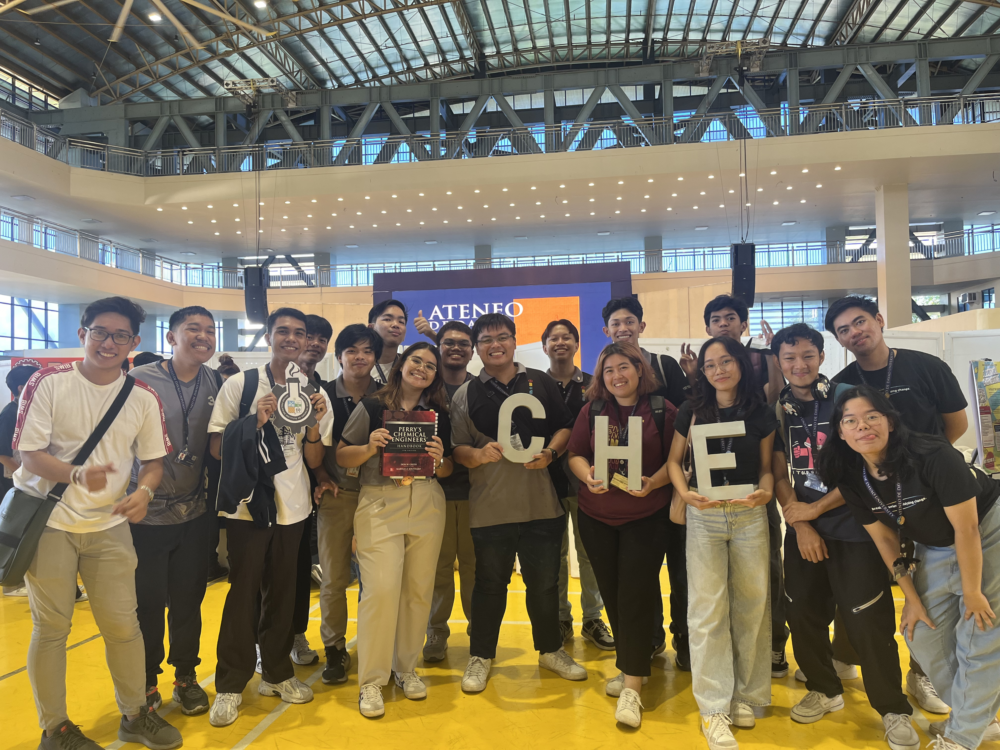

Can you recall a particular instance, class, activity, or engagement you had that made you learn more about that concept or theme? What kind of transformation did you have or are you having since that moment?
A More Humane Life
We had a group activity where we reflected on how the value of dignity is observed in our daily
lives in the university. This activity made me understand the theme, Looking beyond the Self,
as an opportunity to reflect on how we are as an AdDU student. Do we practice the Ignatian values
instilled in us in our university lives? The gist of our group’s reflection is that we
recognized dignity specifically in how we treat others. We respect everyone in the university,
the staff, faculty, and students, as they have dignity. We recognized their inherent worth as
a person; hence, we give a fair treatment to everyone. This realization helped me treat myself
with more compassion, especially during moments of pressure. Moreover, I grew more attentive to
the dignity of others, becoming less judgmental. Hence, as I uphold this value when interacting
with anyone in the university and with myself, I am living a life that is more humane.
